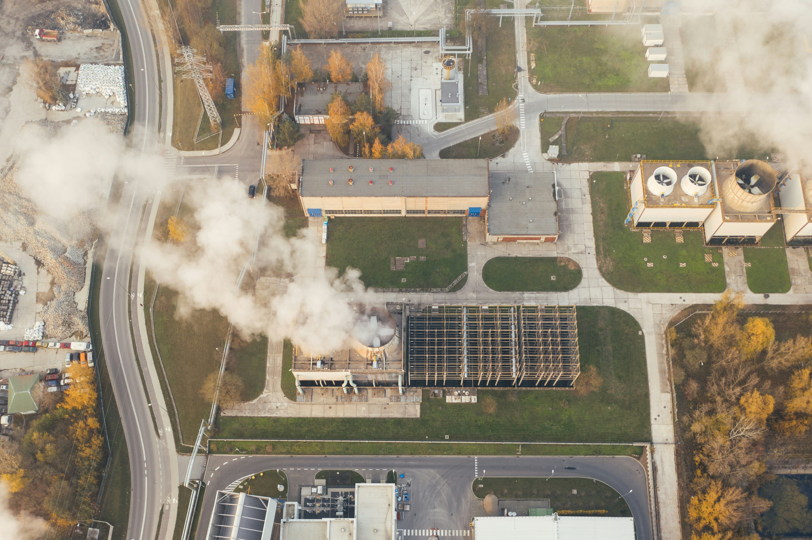

Principais fatores contribuintes
O aumento das emissões de gases de efeito estufa, como dióxido de carbono (CO2) e metano (CH4), é impulsionado principalmente pela queima de combustíveis fósseis, desmatamento e agricultura intensiva. Estas atividades aumentam a concentração de gases na atmosfera, retendo calor e alterando os padrões climáticos globais.
Consequências globais
As mudanças climáticas resultam em aumento das temperaturas globais, elevação do nível do mar, eventos climáticos extremos como furacões e secas, além de impactos negativos na biodiversidade e na saúde humana. Esses fenômenos afetam a agricultura, a disponibilidade de água e a qualidade do ar, colocando em risco a segurança alimentar e hídrica.
Estratégias de mitigação
Para combater as mudanças climáticas, é essencial reduzir as emissões de gases de efeito estufa através do uso de energias renováveis, aumento da eficiência energética, reflorestamento e práticas agrícolas sustentáveis. Políticas governamentais e acordos internacionais são fundamentais para a implementação dessas estratégias.
Impacto nas comunidades vulneráveis
As mudanças climáticas afetam desproporcionalmente as comunidades vulneráveis, agravando desigualdades sociais e econômicas. Populações em áreas costeiras enfrentam maiores riscos de inundações, enquanto regiões agrícolas sofrem com a queda na produtividade devido a condições climáticas extremas. Fortalecer a resiliência dessas comunidades é crucial.
Dados e tendências recentes
Estudos recentes indicam que a última década foi a mais quente já registrada, com níveis de CO2 atingindo 419 partes por milhão em 2021. As previsões apontam que, sem ações significativas, as temperaturas globais podem aumentar entre 1,5°C e 2°C até o final do século, intensificando os impactos climáticos e exigindo uma resposta urgente.